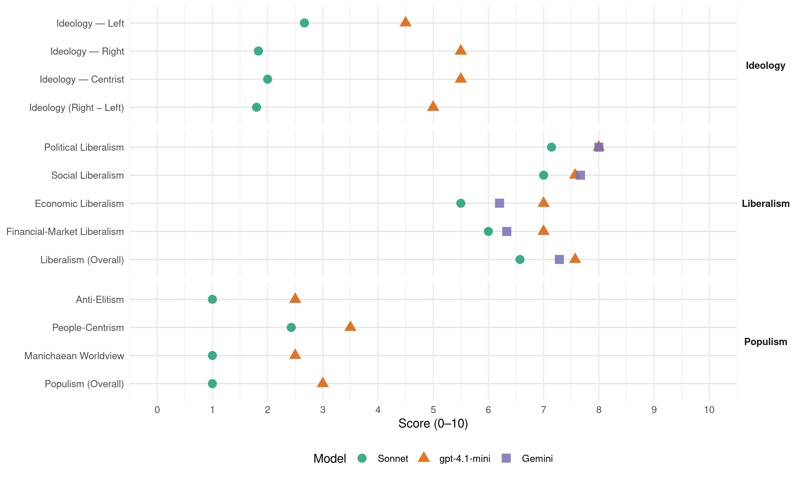

KrF (Norway, 2013)
manifesto_id 12520_201309
Get full text: This site shows derived annotations and short verbatim quotes only. The full manifesto text is © Manifesto Project / WZB — obtain it via manifesto-project.wzb.eu using the manifesto_id above.
Headline scores
| Dimension | Sonnet | gpt-4.1-mini | Gemini |
|---|---|---|---|
| Populism (Overall) | 1.0 | 3.0 | – |
| Anti-Elitism | 1.0 | 2.5 | – |
| People-Centrism | 2.4 | 3.5 | – |
| Manichaean Worldview | 1.0 | 2.5 | – |
| Ideology (Right − Left) | 1.8 | 5.0 | – |
| Liberalism (Overall) | 6.6 | 7.6 | 7.3 |
| Political Liberalism | 7.1 | 8.0 | 8.0 |
| Social Liberalism | 7.0 | 7.6 | 7.7 |
| Economic Liberalism | 5.5 | 7.0 | 6.2 |
| Financial-Market Liberalism | 6.0 | 7.0 | 6.3 |
Evidence per dimension
Economic Liberalism
Gemini · score 6.0 · verified · chunk 1
“gründervirksomhet for kvinner”
egen sektor, og å legge til rette for entreprenørskap og gründervirksomhet for kvinner.
Gemini · score 5.0 · verified · chunk 2
“partnerskapsavtaler/oppdragsavtaler med kommuner”
private, ideelle organisasjoner kan inngå langsiktige partnerskapsavtaler/oppdragsavtaler med kommuner. ha økt forskning på aldring
Gemini · score 5.0 · mixed · chunk 3
“mellom stat og marked”
omsorg og representerer tradisjoner og kunnskap som utgjør den tredje vei i samfunnet mellom stat og marked. KrF vil legge til rette for
Gemini · score 7.0 · verified · chunk 4
“fjerne formuesskatten på arbeidende kapital”
aksjelov for små bedrifter. fjerne formuesskatten på arbeidende kapital. fjerne arveavgiften ved eierskifte i
Gemini · score 6.0 · verified · chunk 5
“utbygging i privat regi gjennom markedsmekanismer”
gjennom privat og offentlig regulering, utbygging i privat regi gjennom markedsmekanismer og privat/offentlig samarbeid.
Gemini · score 7.0 · verified · chunk 6
“reduksjon i statlige eierandeler i bedrifter”
gjennomføre en gradvis reduksjon i statlige eierandeler i bedrifter med forretningsmessig avkastning
gpt-4.1-mini · score 6.0 · verified · chunk 1
“Godene skal fordeles rettferdig, samtidig som kloden skal overlates til våre etterkommere i minst like god stand som da vi fikk ansvar for den”
Mennesket har fått et grunnleggende ansvar for å forvalte skaperverket. Det gjelder både naturressurser, økonomiske og menneskelige ressurser. Naturen gir oss store muligheter og stiller oss samtidig overfor et stort ansvar. Godene skal fordeles rettferdig, samtidig som kloden skal overlates til våre etterkommere i minst like god stand som da vi fikk ansvar for den.
gpt-4.1-mini · score 7.0 · verified · chunk 3
“Konkurranser kan prioritere pris fremfor kvalitet, og kortsiktighet i stedet for langsiktighet”
I dag skvises de ideelle aktørene mellom på den ene siden den holdningen det offentlige skal sørge for alt selv, og på den andre siden økonomisk rasjonalitet og anbuds- og konkurransetenkning. Begge holdningene truer de ideelle aktørene i dag. Konkurranser kan prioritere pris fremfor kvalitet, og kortsiktighet i stedet for langsiktighet. Helse-, omsorgs- og sosialsektorene er ikke markeder, men områder der samfunnet gir omsorg og tar seg av hjelpetrengende. KrF er opptatt av å ta vare på de ideelle aktørene, nettopp fordi den idealismen og de verdiene de står for, har en egenverdi i velferdssamfunnet.
gpt-4.1-mini · score 7.0 · verified · chunk 4
“KrF vil legge forholdene til rette for næringslivet ved å gi forutsigbare rammer som legger til rette for bærekraftig verdiskaping”
KrF vil legge forholdene til rette for næringslivet ved å gi forutsigbare rammer som legger til rette for bærekraftig verdiskaping med hensyn til både etikk, økonomi og miljø. KrF vil gi gründere gode vilkår for å starte egen virksomhet.
gpt-4.1-mini · score 7.0 · verified · chunk 5
“Husbanken må styrkes for å hjelpe unge i etablererfasen til å få et stabilt og trygt lån”
…Husbanken må styrkes for å hjelpe unge i etablererfasen til å få et stabilt og trygt lån. Fokuset på mer miljøvennlige og universelt utformede løsninger må økes. Det skal fortsatt satses på å avskaffe bostedsløshet…
gpt-4.1-mini · score 8.0 · verified · chunk 6
“En ansvarlig finanspolitikk og en stabil økonomisk utvikling er avgjørende for folk og arbeidsplasser”
…Finanspolitikk Finanspolitikken skal bidra til en stabil økonomisk utvikling og høy sysselsetting. En ansvarlig forvaltning av petroleumsformuen er en nødvendig forutsetning for å nå dette målet. Både vår egen og kommende generasjoner har samme rett til inntektene fra utvinningen av olje og gass. En ansvarlig finanspolitikk og en stabil økonomisk utvikling er avgjørende for folk og arbeidsplasser rundt om i landet…
Sonnet · score 5.0 · mixed · chunk 1
“Godene skal fordeles rettferdig”
Naturen gir oss store muligheter og stiller oss samtidig overfor et stort ansvar. Godene skal fordeles rettferdig, samtidig som kloden skal overlates til våre etterkommere i minst like god stand som da vi fikk ansvar for den.
Sonnet · score 4.0 · verified · chunk 2
“offentlig ansvar og styring, refusjon fra folketrygden”
ha en reform av tannhelsetjenesten basert på offentlig ansvar og styring, refusjon fra folketrygden og begrensing av egenbetalingen.
Sonnet · score 6.0 · verified · chunk 3
“konkurransedyktig kunnskapssamfunn”
Skal Norge i fremtiden være et konkurransedyktig kunnskapssamfunn, må vi satse på forskning
Sonnet · score 6.0 · verified · chunk 4
“enkelt å starte og drive egen virksomhet”
KrF vil gi gründere gode vilkår for å starte egen virksomhet. Det skal være enkelt å starte og drive egen virksomhet.
Sonnet · score 6.0 · verified · chunk 5
“gjennom privat og offentlig regulering, utbygging i privat regi gjennom markedsmekanismer”
Det ordinære boligtilbudet fremskaffes gjennom privat og offentlig regulering, utbygging i privat regi gjennom markedsmekanismer og privat/offentlig samarbeid.
Sonnet · score 6.0 · mixed · chunk 6
“fjerne formuesskatten på arbeidende kapital”
KrF ønsker å fjerne formuesskatt på arbeidende kapital, som kan defineres som kapital i bruk i aktiv næringsvirksomhet.
Financial-Market Liberalism
Gemini · score 6.0 · verified · chunk 4
“opprette et uavhengig, statlig klageorgan for finansielle tjenester”
avstand fra «bruk-og-kast»-tankegangen. opprette et uavhengig, statlig klageorgan for finansielle tjenester. at Finanstilsynet skal legge større vekt på
Gemini · score 6.0 · verified · chunk 5
“finanspolitikk med lavt rentenivå er viktig”
unødvendig fordyrende eller tidkrevende. En ansvarlig finanspolitikk med lavt rentenivå er viktig for dem som skaffer seg bolig
Gemini · score 7.0 · verified · chunk 6
“skjerpe egenkapitalkravene til banker og finansinstitusjoner”
KrF vil skjerpe egenkapitalkravene til banker og finansinstitusjoner og bedre systemet for bankkriseløsning.
gpt-4.1-mini · score 7.0 · verified · chunk 5
“Husbankens ordninger for gunstig finansiering til slike boliger må beholdes og styrkes”
…Husbankens ordninger for gunstig finansiering til slike boliger må beholdes og styrkes. De økonomiske virkemidlene er målrettet mot de mest vanskeligstilte på boligmarkedet. Sentrale boligvirkemidler som bostøtte…
gpt-4.1-mini · score 7.0 · verified · chunk 6
“Det er nødvendig å skjerpe kravene til bankers egenkapital og å bedre systemet for bankkriseløsning”
…Finansmarkedet Finanskrisen har understreket behovet for god regulering av banker og finansmarkeder. Det er nødvendig å skjerpe kravene til bankers egenkapital og å bedre systemet for bankkriseløsning. Forbrukerhensynet i sparemarkedet må styrkes ved å bedre reguleringen av hvilke produkter som tilbys…
Sonnet · score 6.0 · verified · chunk 3
“markedsbasert virkemiddel”
Dette er et markedsbasert virkemiddel som har til hensikt å stimulere til økte investeringer i ny fornybar kraftproduksjon
Sonnet · score 5.0 · mixed · chunk 4
“opprette et uavhengig, statlig klageorgan for finansielle tjenester”
opprette et uavhengig, statlig klageorgan for finansielle tjenester. at Finanstilsynet skal legge større vekt på forbrukerhensyn.
Sonnet · score 6.0 · verified · chunk 5
“nye finansieringsordninger som gjør det mulig”
Høye boligpriser bør møtes med nye finansieringsordninger som gjør det mulig å skaffe egen bolig også i pressområder.
Sonnet · score 5.0 · mixed · chunk 6
“skjerpe kravene til bankers egenkapital”
Det er nødvendig å skjerpe kravene til bankers egenkapital og å bedre systemet for bankkriseløsning.
Political Liberalism
Gemini · score 8.0 · verified · chunk 1
“Demokratiet er den styreformen som gir best beskyttelse”
på få hender. Demokratiet er den styreformen som gir best beskyttelse mot maktovergrep.
Gemini · score 8.0 · verified · chunk 2
“rettsstat og rettssikkerhet er bærende prinsipper”
når lovbrudd begås, skal samfunnet sørge for rettferdighet. Rettsstat og rettssikkerhet er bærende prinsipper i et fritt demokrati. Forebygging, politi
Gemini · score 8.0 · verified · chunk 3
“fremmer samtidig kunnskap om og forståelse for demokrati”
Folkehøgskolen gir innsikt i menneskelige relasjoner og fremmer samtidig kunnskap om og forståelse for demokrati, samfunn og menneskerettigheter.
Gemini · score 8.0 · verified · chunk 4
“sikre reell organisasjonsfrihet, herunder retten”
arbeidssøkere som allerede befinner seg her i landet. sikre reell organisasjonsfrihet, herunder retten til ikke å organisere seg. forsterke forskrift
Gemini · score 8.0 · verified · chunk 5
“velfungerende demokrati er avhengig av”
Partiene Et velfungerende demokrati er avhengig av at politiske partier har økonomi
Gemini · score 8.0 · verified · chunk 6
“velfungerende og grunnlovsfestet lokaldemokrati”
KrF vil sikre et velfungerende og grunnlovsfestet lokaldemokrati. intensivere innsatsen mot korrupsjon
Gemini · score 8.0 · verified · chunk 7
“sikre norsk suverenitet og territorial integritet”
KrF vil at Norge skal ha et forsvar som til enhver tid er sterkt nok til å sikre norsk suverenitet og territorial integritet i samarbeid med NATO.
gpt-4.1-mini · score 8.0 · verified · chunk 1
“Demokratiet er den styreformen som gir best beskyttelse mot maktovergrep”
Vi er på vakt mot å samle for mye makt på få hender. Demokratiet er den styreformen som gir best beskyttelse mot maktovergrep.
gpt-4.1-mini · score 8.0 · verified · chunk 2
“Rettsstat og rettssikkerhet er bærende prinsipper i et fritt demokrati”
Trygghet er en grunnleggende faktor i alle menneskers hverdag, og når lovbrudd begås, skal samfunnet sørge for rettferdighet. Rettsstat og rettssikkerhet er bærende prinsipper i et fritt demokrati. Forebygging, politi og beredskap Det beste verktøyet mot kriminalitet er forebygging.
gpt-4.1-mini · score 8.0 · verified · chunk 3
“Den akademiske friheten til universiteter og høyskoler må ivaretas”
Det er et offentlig ansvar å sikre lik rett til utdanning for alle. KrF vil ha en gjennomgang av dimensjoneringen i høyere utdanning med tanke på samfunnets behov for ulike typer kompetanse og arbeidskraft. Samtidig er det viktig å understreke høyere utdanning ikke bare er viktig i et samfunnsøkonomisk perspektiv. Den er også viktig i et dannelsesperspektiv ved at den enkelte student gis muligheten til å utvikle sine evner og få realisert mer av det potensialet som ligger i hver enkelt. KrF vil at Norge skal være en kunnskapsnasjon på høyt internasjonalt nivå. Det er viktig å sikre nasjonal styring av høyere utdanning for å bevare helhet og mangfold i utdanningstilbudet. Den akademiske friheten til universiteter og høyskoler må ivaretas. Økt internasjonalisering innenfor høyere utdanning gjør det viktig å legge forholdene til rette for en større grad av utveksling av kunnskap, studenter og ansatte.
gpt-4.1-mini · score 7.0 · verified · chunk 4
“Norsk olje- og gassproduksjon er avhengig av forutsigbare rammebetingelser”
Norsk olje- og gassproduksjon er avhengig av forutsigbare rammebetingelser. For KrF er det viktig at utvinningstempoet er politisk styrt ut fra en samfunnsmessig helhetsvurdering og ikke avgjøres med utgangspunkt i markedsaktørenes behov.
gpt-4.1-mini · score 8.0 · verified · chunk 5
“Ytringsfriheten må vernes og den offentlige samtale stimuleres blant annet gjennom at mediene gis gode rammevilkår”
…Ytringsfriheten må vernes og den offentlige samtale stimuleres blant annet gjennom at mediene gis gode rammevilkår. Reformer og større endringer i samfunnslivet må utredes slik at man er klar over konsekvensene…
gpt-4.1-mini · score 9.0 · verified · chunk 6
“God demokratisk styring må sikres også der man velger interkommunalt samarbeid”
…interkommunalt samarbeid. God demokratisk styring må sikres også der man velger interkommunalt samarbeid. Dette har imidlertid også ført til demokratiske utfordringer ved at viktigste beslutninger ikke blir tatt i bredt sammensatte politiske fora. Dette taler for at flere kommuner med fordel kunne slå seg sammen. Kommunestruktur Flere kommuner kan ha nytte av å slå seg sammen…
gpt-4.1-mini · score 8.0 · verified · chunk 7
“Norge skal alltid freds- og diplomatisporet være det virkemiddelet man primært benytter seg av overfor andre stater og folk”
Norske spesialstyrker er sentrale for det norske forsvaret både når det gjelder deltakelse i internasjonale operasjoner og vår nasjonale beredskap. Disse styrkene bør gis prioritet, og terskelen for å trekke på spesialstyrkenes kunnskap i den nasjonale beredskapen bør senkes. For Norge skal alltid freds- og diplomatisporet være det virkemiddelet man primært benytter seg av overfor andre stater og folk. I situasjoner der militærmakt er påkrevet for å bringe situasjonen under kontroll og forhindre folkemord eller andre ekstreme overgrep mot sivilbefolkningen, må imidlertid Norge være villig til å ta sin del av et internasjonalt ansvar.
Sonnet · score 7.0 · verified · chunk 1
“Demokratiet er den styreformen som gir best beskyttelse mot maktovergrep”
Vi er på vakt mot å samle for mye makt på få hender. Demokratiet er den styreformen som gir best beskyttelse mot maktovergrep. Solidaritet Nestekjærligheten og menneskeverdet tilsier en solidaritet som er mer radikal enn den som kommer fra rettferdighetshensyn alene.
Sonnet · score 7.0 · verified · chunk 2
“Rettsstat og rettssikkerhet er bærende prinsipper”
Rettsstat og rettssikkerhet er bærende prinsipper i et fritt demokrati. Forebygging, politi og beredskap
Sonnet · score 7.0 · verified · chunk 3
“akademiske friheten til universiteter”
Det er viktig å sikre nasjonal styring av høyere utdanning for å bevare helhet og mangfold i utdanningstilbudet. Den akademiske friheten til universiteter og høyskoler må ivaretas
Sonnet · score 6.0 · verified · chunk 4
“fremmes for behandling i Stortinget”
at det utarbeides en nasjonal plan for kraftlinjer som oppdateres og fremmes for behandling i Stortinget en gang hver stortingsperiode.
Sonnet · score 8.0 · verified · chunk 5
“sikre et velfungerende og grunnlovsfestet lokaldemokrati”
KrF vil sikre et velfungerende og grunnlovsfestet lokaldemokrati. intensivere innsatsen mot korrupsjon i det norske samfunnet.
Sonnet · score 8.0 · verified · chunk 6
“grunnlovsfestet lokaldemokrati”
KrF vil sikre et velfungerende og grunnlovsfestet lokaldemokrati. intensivere innsatsen mot korrupsjon i det norske samfunnet.
Sonnet · score 7.0 · verified · chunk 7
“forankret i folkeretten”
Slike operasjoner skal være forankret i folkeretten. De soldatene Norge sender ut i internasjonale oppdrag skal være godt trent og rustet for oppgaven
Liberalism (Overall)
Gemini · score 7.0 · verified · chunk 1
“Demokratiet er den styreformen som gir best beskyttelse”
på få hender. Demokratiet er den styreformen som gir best beskyttelse mot maktovergrep.
Gemini · score 7.0 · verified · chunk 2
“rettsstat og rettssikkerhet er bærende prinsipper”
når lovbrudd begås, skal samfunnet sørge for rettferdighet. Rettsstat og rettssikkerhet er bærende prinsipper i et fritt demokrati. Forebygging, politi
Gemini · score 7.0 · verified · chunk 3
“Religions- og livssynsfrihet er en grunnleggende menneskerettighet”
Trosfrihet og trossamfunnenes selvstendighet Religions- og livssynsfrihet er en grunnleggende menneskerettighet og må ligge til grunn for religions- og livssynspolitikken.
Gemini · score 7.0 · verified · chunk 4
“fjerne formuesskatten på arbeidende kapital”
aksjelov for små bedrifter. fjerne formuesskatten på arbeidende kapital. fjerne arveavgiften ved eierskifte i
Gemini · score 7.0 · verified · chunk 5
“velfungerende demokrati er avhengig av”
Partiene Et velfungerende demokrati er avhengig av at politiske partier har økonomi
Gemini · score 8.0 · verified · chunk 6
“velfungerende og grunnlovsfestet lokaldemokrati”
KrF vil sikre et velfungerende og grunnlovsfestet lokaldemokrati. intensivere innsatsen mot korrupsjon
Gemini · score 8.0 · verified · chunk 7
“sikre norsk suverenitet og territorial integritet”
KrF vil at Norge skal ha et forsvar som til enhver tid er sterkt nok til å sikre norsk suverenitet og territorial integritet i samarbeid med NATO.
gpt-4.1-mini · score 7.0 · verified · chunk 1
“Demokratiet er den styreformen som gir best beskyttelse mot maktovergrep”
Vi er på vakt mot å samle for mye makt på få hender. Demokratiet er den styreformen som gir best beskyttelse mot maktovergrep.
gpt-4.1-mini · score 8.0 · verified · chunk 2
“Rettsstat og rettssikkerhet er bærende prinsipper i et fritt demokrati”
Trygghet er en grunnleggende faktor i alle menneskers hverdag, og når lovbrudd begås, skal samfunnet sørge for rettferdighet. Rettsstat og rettssikkerhet er bærende prinsipper i et fritt demokrati. Forebygging, politi og beredskap Det beste verktøyet mot kriminalitet er forebygging.
gpt-4.1-mini · score 7.0 · verified · chunk 3
“Den akademiske friheten til universiteter og høyskoler må ivaretas”
Det er et offentlig ansvar å sikre lik rett til utdanning for alle. KrF vil ha en gjennomgang av dimensjoneringen i høyere utdanning med tanke på samfunnets behov for ulike typer kompetanse og arbeidskraft. Samtidig er det viktig å understreke høyere utdanning ikke bare er viktig i et samfunnsøkonomisk perspektiv. Den er også viktig i et dannelsesperspektiv ved at den enkelte student gis muligheten til å utvikle sine evner og få realisert mer av det potensialet som ligger i hver enkelt. KrF vil at Norge skal være en kunnskapsnasjon på høyt internasjonalt nivå. Det er viktig å sikre nasjonal styring av høyere utdanning for å bevare helhet og mangfold i utdanningstilbudet. Den akademiske friheten til universiteter og høyskoler må ivaretas. Økt internasjonalisering innenfor høyere utdanning gjør det viktig å legge forholdene til rette for en større grad av utveksling av kunnskap, studenter og ansatte.
gpt-4.1-mini · score 7.0 · verified · chunk 4
“KrF vil legge forholdene til rette for næringslivet ved å gi forutsigbare rammer som legger til rette for bærekraftig verdiskaping”
KrF vil legge forholdene til rette for næringslivet ved å gi forutsigbare rammer som legger til rette for bærekraftig verdiskaping med hensyn til både etikk, økonomi og miljø. KrF vil gi gründere gode vilkår for å starte egen virksomhet.
gpt-4.1-mini · score 8.0 · verified · chunk 5
“Ytringsfriheten må vernes og den offentlige samtale stimuleres blant annet gjennom at mediene gis gode rammevilkår”
…Ytringsfriheten må vernes og den offentlige samtale stimuleres blant annet gjennom at mediene gis gode rammevilkår. Reformer og større endringer i samfunnslivet må utredes slik at man er klar over konsekvensene…
gpt-4.1-mini · score 8.0 · verified · chunk 6
“En ansvarlig finanspolitikk og en stabil økonomisk utvikling er avgjørende for folk og arbeidsplasser”
…Finanspolitikk Finanspolitikken skal bidra til en stabil økonomisk utvikling og høy sysselsetting. En ansvarlig forvaltning av petroleumsformuen er en nødvendig forutsetning for å nå dette målet. Både vår egen og kommende generasjoner har samme rett til inntektene fra utvinningen av olje og gass. En ansvarlig finanspolitikk og en stabil økonomisk utvikling er avgjørende for folk og arbeidsplasser rundt om i landet…
gpt-4.1-mini · score 8.0 · verified · chunk 7
“For Norge skal alltid freds- og diplomatisporet være det virkemiddelet man primært benytter seg av overfor andre stater og folk”
Norske spesialstyrker er sentrale for det norske forsvaret både når det gjelder deltakelse i internasjonale operasjoner og vår nasjonale beredskap. Disse styrkene bør gis prioritet, og terskelen for å trekke på spesialstyrkenes kunnskap i den nasjonale beredskapen bør senkes. For Norge skal alltid freds- og diplomatisporet være det virkemiddelet man primært benytter seg av overfor andre stater og folk. I situasjoner der militærmakt er påkrevet for å bringe situasjonen under kontroll og forhindre folkemord eller andre ekstreme overgrep mot sivilbefolkningen, må imidlertid Norge være villig til å ta sin del av et internasjonalt ansvar.
Sonnet · score 6.0 · verified · chunk 1
“Demokratiet er den styreformen som gir best beskyttelse mot maktovergrep”
Vi er på vakt mot å samle for mye makt på få hender. Demokratiet er den styreformen som gir best beskyttelse mot maktovergrep. Solidaritet Nestekjærligheten og menneskeverdet tilsier en solidaritet som er mer radikal enn den som kommer fra rettferdighetshensyn alene.
Sonnet · score 6.0 · verified · chunk 2
“Rettsstat og rettssikkerhet er bærende prinsipper”
Rettsstat og rettssikkerhet er bærende prinsipper i et fritt demokrati. Forebygging, politi og beredskap
Sonnet · score 7.0 · verified · chunk 3
“Religions- og livssynsfrihet er en grunnleggende menneskerettighet”
Religions- og livssynsfrihet er en grunnleggende menneskerettighet og må ligge til grunn for religions- og livssynspolitikken
Sonnet · score 6.0 · verified · chunk 4
“enkelt å starte og drive egen virksomhet”
KrF vil gi gründere gode vilkår for å starte egen virksomhet. Det skal være enkelt å starte og drive egen virksomhet.
Sonnet · score 7.0 · verified · chunk 5
“sikre et velfungerende og grunnlovsfestet lokaldemokrati”
KrF vil sikre et velfungerende og grunnlovsfestet lokaldemokrati. intensivere innsatsen mot korrupsjon i det norske samfunnet.
Sonnet · score 7.0 · verified · chunk 6
“grunnlovsfestet lokaldemokrati”
KrF vil sikre et velfungerende og grunnlovsfestet lokaldemokrati. intensivere innsatsen mot korrupsjon i det norske samfunnet.
Sonnet · score 7.0 · verified · chunk 7
“forankret i folkeretten”
Slike operasjoner skal være forankret i folkeretten. De soldatene Norge sender ut i internasjonale oppdrag skal være godt trent og rustet for oppgaven
Anti-Elitism
gpt-4.1-mini · score 2.0 · verified · chunk 4
“Norsk olje- og gassproduksjon er avhengig av forutsigbare rammebetingelser”
Norsk olje- og gassproduksjon er avhengig av forutsigbare rammebetingelser. For KrF er det viktig at utvinningstempoet er politisk styrt ut fra en samfunnsmessig helhetsvurdering og ikke avgjøres med utgangspunkt i markedsaktørenes behov. KrF vil fortsatt stille strenge miljøkrav og sikre at utvinning av norsk olje og gass skjer på mest mulig miljøvennlig måte.
gpt-4.1-mini · score 3.0 · verified · chunk 5
“styrke statlige tilskudd til satsing på sammenhengende, overordnede gang- og sykkelveifelt i de store byene”
…styrke statlige tilskudd til satsing på sammenhengende, overordnede gang- og sykkelveifelt i de store byene. videreutvikle belønningsordningen og legge til rette for miljøvennlig drivstoff…
Sonnet · score 1.0 · verified · chunk 1
“Vi er på vakt mot å samle for mye makt på få hender”
Det finnes derfor ingen fullkommen politikk. Det vil alltid være mulig å endre samfunnet til det bedre. Vi er på vakt mot å samle for mye makt på få hender. Demokratiet er den styreformen som gir best beskyttelse mot maktovergrep.
Sonnet · score 1.0 · mixed · chunk 2
“usunn maktkonsentrasjon på eiersiden motarbeides”
KrF vil gi bokbransjen vilkår som sikrer hele bransjen en sunn utvikling, samtidig som usunn maktkonsentrasjon på eiersiden motarbeides.
Sonnet · score 1.0 · mixed · chunk 3
“markedsaktørenes behov”
utvinningstempoet er politisk styrt ut fra en samfunnsmessig helhetsvurdering og ikke avgjøres med utgangspunkt i markedsaktørenes behov
Sonnet · score 2.0 · mixed · chunk 4
“banker aktivt har solgt kompliserte og risikofylte spareprodukter”
Det finnes også flere tilfeller av at banker aktivt har solgt kompliserte og risikofylte spareprodukter til kunder som aldri burde ha gått inn på denne typen investeringer.
Sonnet · score 1.0 · mixed · chunk 5
“intensivere innsatsen mot korrupsjon”
KrF vil sikre et velfungerende og grunnlovsfestet lokaldemokrati. intensivere innsatsen mot korrupsjon i det norske samfunnet.
Sonnet · score 1.0 · verified · chunk 6
“intensivere innsatsen mot korrupsjon”
KrF vil sikre et velfungerende og grunnlovsfestet lokaldemokrati. intensivere innsatsen mot korrupsjon i det norske samfunnet.
Ideology — Centrist
gpt-4.1-mini · score 4.0 · verified · chunk 4
“For KrF er det viktig at utvinningstempoet er politisk styrt ut fra en samfunnsmessig helhetsvurdering”
For KrF er det viktig at utvinningstempoet er politisk styrt ut fra en samfunnsmessig helhetsvurdering og ikke avgjøres med utgangspunkt i markedsaktørenes behov. KrF vil fortsatt stille strenge miljøkrav og sikre at utvinning av norsk olje og gass skjer på mest mulig miljøvennlig måte.
gpt-4.1-mini · score 7.0 · verified · chunk 5
“KrF mener et overordnet mål for integreringspolitikken må være at innvandrere som kommer til Norge for å bli her, opplever seg respektert”
…KrF mener et overordnet mål for integreringspolitikken må være at innvandrere som kommer til Norge for å bli her, opplever seg respektert og som en del av fellesskapet med de plikter og rettigheter som andre…
Sonnet · score 2.0 · verified · chunk 1
“et alternativ til de mer systemorienterte ideologiene på høyre- og venstresiden”
Verdiforankringen i den kristendemokratiske ideologien utgjør et alternativ til de mer systemorienterte ideologiene på høyre- og venstresiden. En verdiorientert ideologi med menneskeverdet i sentrum er det beste redskapet i en verden i stadig forandring.
Sonnet · score 2.0 · verified · chunk 2
“Ethvert menneske har uendelig verdi”
Ethvert menneske har uendelig verdi. Menneskeverdet må ikke graderes. Dette innebærer at vi som samfunn har en plikt
Sonnet · score 2.0 · verified · chunk 4
“forutsigbare rammer for petroleumsvirksomheten”
KrF vil sikre forutsigbare rammer for petroleumsvirksomheten.
Sonnet · score 2.0 · verified · chunk 5
“folk skal kunne ferdes trygt, enkelt”
Det er et mål for KrF at folk skal kunne ferdes trygt, enkelt og mest mulig miljøriktig
Sonnet · score 2.0 · verified · chunk 6
“reelt demokrati”
Det regionale nivået må styres av et direkte folkevalgt organ for å sikre reelt demokrati.
Ideology — Left
gpt-4.1-mini · score 4.0 · verified · chunk 4
“Klimautfordringen gjør at bruk av olje og gass må reduseres”
Klimautfordringen gjør at bruk av olje og gass må reduseres. Etter hvert må Norge også tilpasse seg til et samfunn basert på andre energikilder. KrF ønsker en målrettet satsing på utvinning av olje fra eksisterende felt på norsk sokkel.
gpt-4.1-mini · score 5.0 · verified · chunk 5
“styrke statlige støtteordninger for bosetting og integrering av flyktninger”
…styrke statlige støtteordninger for bosetting og integrering av flyktninger. tilstrebe at nyankomne innvandrere fordeles jevnt i landet og vurdere økonomiske insentiver for å motivere dem til å bli i distriktskommuner…
Sonnet · score 3.0 · verified · chunk 1
“Vi ønsker også å motarbeide for store økonomiske forskjeller”
Hvert enkelt menneske bør i utgangspunktet ha mulighet til å få sin rettferdige andel av disse ressursene. Vi har et ansvar for å arbeide for en mer rettferdig fordeling i verden. Vi ønsker også å motarbeide for store økonomiske forskjeller mellom fattige og rike i vårt eget samfunn.
Sonnet · score 2.0 · verified · chunk 2
“offentlig ansvar og styring, refusjon fra folketrygden”
ha en reform av tannhelsetjenesten basert på offentlig ansvar og styring, refusjon fra folketrygden og begrensing av egenbetalingen.
Sonnet · score 2.0 · verified · chunk 3
“ideelle aktørene i dag”
I dag skvises de ideelle aktørene mellom på den ene siden den holdningen det offentlige skal sørge for alt selv, og på den andre siden økonomisk rasjonalitet og anbuds- og konkurransetenkning. Begge holdningene truer de ideelle aktørene i dag
Sonnet · score 3.0 · verified · chunk 4
“motarbeide sosial dumping”
KrF vil arbeide for at disse arbeidstakerne får samme betingelser som norske arbeidstakere, og vi vil motarbeide sosial dumping.
Sonnet · score 3.0 · verified · chunk 5
“styrke tilskuddsordningen for barn og unge”
styrke tilskuddsordningen for barn og unge i større bysamfunn. støtte frivillige organisasjoner som tilbyr fritidstilbud for fattige og vanskeligstilte barn.
Sonnet · score 3.0 · verified · chunk 6
“omfordeling fra de som har mest”
Skattepolitikken kan imidlertid også brukes til å oppnå mer rettferdighet gjennom omfordeling fra de som har mest til de som har mindre
Ideology (Right − Left)
gpt-4.1-mini · score 4.0 · verified · chunk 4
“For KrF er det viktig at utvinningstempoet er politisk styrt ut fra en samfunnsmessig helhetsvurdering”
For KrF er det viktig at utvinningstempoet er politisk styrt ut fra en samfunnsmessig helhetsvurdering og ikke avgjøres med utgangspunkt i markedsaktørenes behov. KrF vil fortsatt stille strenge miljøkrav og sikre at utvinning av norsk olje og gass skjer på mest mulig miljøvennlig måte.
gpt-4.1-mini · score 6.0 · verified · chunk 5
“KrF mener et overordnet mål for integreringspolitikken må være at innvandrere som kommer til Norge for å bli her, opplever seg respektert”
…KrF mener et overordnet mål for integreringspolitikken må være at innvandrere som kommer til Norge for å bli her, opplever seg respektert og som en del av fellesskapet med de plikter og rettigheter som andre…
Sonnet · score 2.0 · verified · chunk 1
“et alternativ til de mer systemorienterte ideologiene på høyre- og venstresiden”
Verdiforankringen i den kristendemokratiske ideologien utgjør et alternativ til de mer systemorienterte ideologiene på høyre- og venstresiden. En verdiorientert ideologi med menneskeverdet i sentrum er det beste redskapet i en verden i stadig forandring.
Sonnet · score 2.0 · verified · chunk 2
“offentlig ansvar og styring, refusjon fra folketrygden”
ha en reform av tannhelsetjenesten basert på offentlig ansvar og styring, refusjon fra folketrygden og begrensing av egenbetalingen.
Sonnet · score 2.0 · verified · chunk 3
“kristen kulturtradisjon”
I Norge har vi en tusenårig kristen kulturtradisjon. Kristne og humanistiske verdier har ligget til grunn for utformingen av det samfunnet vi lever i
Sonnet · score 2.0 · mixed · chunk 4
“motarbeide sosial dumping”
KrF vil arbeide for at disse arbeidstakerne får samme betingelser som norske arbeidstakere, og vi vil motarbeide sosial dumping.
Sonnet · score 2.0 · verified · chunk 5
“styrke tilskuddsordningen for barn og unge”
styrke tilskuddsordningen for barn og unge i større bysamfunn. støtte frivillige organisasjoner som tilbyr fritidstilbud for fattige og vanskeligstilte barn.
Sonnet · score 1.0 · verified · chunk 6
“omfordeling fra de som har mest”
Skattepolitikken kan imidlertid også brukes til å oppnå mer rettferdighet gjennom omfordeling fra de som har mest til de som har mindre
Ideology — Right
gpt-4.1-mini · score 5.0 · verified · chunk 4
“KrF vil derfor opprette petroleumsfrie soner i havområdene utenfor Lofoten, Vesterålen og Senja”
KrF vil derfor opprette petroleumsfrie soner i havområdene utenfor Lofoten, Vesterålen og Senja, Jan Mayen, Mørebankene og kystnære områder i Skagerrak. Petroleumsfrie soner bør også opprettes i spesielt sårbare og kystnære deler av Barentshavet.
gpt-4.1-mini · score 6.0 · verified · chunk 5
“sørge for at personer uten lovlig opphold som blir dømt for alvorlig kriminalitet, blir holdt fengslet”
…sørge for at personer uten lovlig opphold som blir dømt for alvorlig kriminalitet, blir holdt fengslet, eller i en form for forvaring, inntil uttransportering. gi alle asylsøkere en psykiatrisk vurdering og tilbud…
Sonnet · score 2.0 · verified · chunk 1
“KrF er opptatt av å sikre ekteskapet mellom en mann og en kvinne”
Ekteskap og samliv KrF er opptatt av å sikre ekteskapet mellom en mann og en kvinne i lovverket. Dette har vist seg å være den mest stabile rammen rundt barns oppvekst.
Sonnet · score 2.0 · verified · chunk 2
“menn med minoritetsbakgrunn overrepresentert”
Blant dem som anmeldes for denne typen voldtekter er menn med minoritetsbakgrunn overrepresentert. KrF mener det må satses mer på forebygging
Sonnet · score 2.0 · verified · chunk 3
“kristen kulturtradisjon”
I Norge har vi en tusenårig kristen kulturtradisjon. Kristne og humanistiske verdier har ligget til grunn for utformingen av det samfunnet vi lever i
Sonnet · score 2.0 · verified · chunk 4
“bevare norsk eierskap i fiskeri og havbruk”
KrF vil sikre en forsvarlig og langsiktig bærekraftig forvaltning av fiskeressursene. bevare norsk eierskap i fiskeri og havbruk.
Sonnet · score 2.0 · verified · chunk 5
“regulere innvandringen for å ivareta”
er det nødvendig å regulere innvandringen for å ivareta behovet for en god integrering av de som kommer.
Sonnet · score 1.0 · verified · chunk 6
“norsk suverenitet og kontroll over eget”
KrF vil føre en sikkerhetspolitikk som ivaretar norsk suverenitet og kontroll over eget territorium.
Manichaean Worldview
gpt-4.1-mini · score 3.0 · verified · chunk 4
“Petroleumssektoren står for en fjerdedel av de samlede norske utslippene av klimagasser”
Petroleumssektoren står for en fjerdedel av de samlede norske utslippene av klimagasser. Klimagassutslippene er stort sett avgasser fra forbrenning av gass i turbiner, fakling av gass og forbrenning av diesel. Det er viktig at petroleumssektoren tar sin del av ansvaret for å redusere norske klimagassutslipp.
gpt-4.1-mini · score 2.0 · verified · chunk 5
“kriminelle ikke får anledning til å misbruke asylinstituttet, men raskt sendes ut av landet”
…Det er særlig viktig at kriminelle ikke får anledning til å misbruke asylinstituttet, men raskt sendes ut av landet. Det er avgjørende at norske utlendingsmyndigheter har en forståelse for hva religiøs tro…
Sonnet · score 1.0 · verified · chunk 1
“Den inkluderer selv de vi måtte oppfatte som våre fiender”
Nestekjærligheten gjelder alle mennesker, uavhengig av hvem de er og hvor de bor. Den inkluderer selv de vi måtte oppfatte som våre fiender, og den krever aktiv handling.
Sonnet · score 1.0 · verified · chunk 2
“Ethvert menneske har uendelig verdi”
Ethvert menneske har uendelig verdi. Menneskeverdet må ikke graderes. Dette innebærer at vi som samfunn har en plikt
Sonnet · score 1.0 · verified · chunk 6
“Terrorisme må bekjempes og kan aldri”
Terrorisme må bekjempes og kan aldri anerkjennes som virkemiddel. Støtte til terror fra utenforstående krefter må motvirkes.
People-Centrism
gpt-4.1-mini · score 3.0 · verified · chunk 4
“Lokalsamfunnene i nord må på samme måte som kystområdene i sør sikres ringvirkninger”
Lokalsamfunnene i nord må på samme måte som kystområdene i sør sikres ringvirkninger på land av en voksende olje- og gassvirksomhet i landsdelen. Det er viktig at både politiske miljøer, næringsmiljøer og kunnskapsmiljøer i nord blir hørt i prosessen og når beslutninger skal fattes om olje- og gassutvinning i nord.
gpt-4.1-mini · score 4.0 · verified · chunk 5
“Mangfoldet innvandrere bringer med seg er en berikelse for Norge”
…Mangfoldet innvandrere bringer med seg er en berikelse for Norge. KrF mener et overordnet mål for integreringspolitikken må være at innvandrere som kommer til Norge for å bli her…
Sonnet · score 2.0 · verified · chunk 1
“Målet med politisk arbeid er et best mulig samfunn for alle”
Trosfrihet er grunnleggende i kristendemokratisk ideologi, og politikken skal derfor aldri blande seg inn i menneskers personlige trosforhold. Målet med politisk arbeid er et best mulig samfunn for alle, uavhengig av tro.
Sonnet · score 2.0 · verified · chunk 2
“folk flest, som for eksempel lommetyverier”
Kriminalitet som rammer folk flest, som for eksempel lommetyverier, hytteinnbrudd og skadeverk
Sonnet · score 2.0 · verified · chunk 3
“hele landet til gode”
næringsutvikling, teknologiutvikling og samfunnsutvikling som har kommet hele landet til gode
Sonnet · score 3.0 · verified · chunk 4
“allmennhetens adgang til strandsonen”
sikre allemannsretten, og allmennhetens adgang til strandsonen blant annet ved erverv av friluftsområder
Sonnet · score 3.0 · verified · chunk 5
“folk skal kunne ferdes trygt, enkelt”
Det er et mål for KrF at folk skal kunne ferdes trygt, enkelt og mest mulig miljøriktig
Sonnet · score 3.0 · verified · chunk 6
“makt og beslutninger tas på lavest mulig”
arbeide for rasjonell og god styring der makt og beslutninger tas på lavest mulig hensiktsmessige nivå.
Sonnet · score 2.0 · verified · chunk 7
“beskytte befolkningen og ta vare på samfunnets verdier”
Totalforsvar omfatter utnyttelse av militære og sivile ressurser for å opprettholde et organisert og funksjonsdyktig samfunn, beskytte befolkningen og ta vare på samfunnets verdier.
Populism (Overall)
gpt-4.1-mini · score 3.0 · verified · chunk 4
“Norsk olje- og gassproduksjon er avhengig av forutsigbare rammebetingelser”
Norsk olje- og gassproduksjon er avhengig av forutsigbare rammebetingelser. For KrF er det viktig at utvinningstempoet er politisk styrt ut fra en samfunnsmessig helhetsvurdering og ikke avgjøres med utgangspunkt i markedsaktørenes behov. KrF vil fortsatt stille strenge miljøkrav og sikre at utvinning av norsk olje og gass skjer på mest mulig miljøvennlig måte.
gpt-4.1-mini · score 3.0 · verified · chunk 5
“Mangfoldet innvandrere bringer med seg er en berikelse for Norge”
…Mangfoldet innvandrere bringer med seg er en berikelse for Norge. KrF mener et overordnet mål for integreringspolitikken må være at innvandrere som kommer til Norge for å bli her…
Sonnet · score 1.0 · verified · chunk 1
“Vi er på vakt mot å samle for mye makt på få hender”
Det finnes derfor ingen fullkommen politikk. Det vil alltid være mulig å endre samfunnet til det bedre. Vi er på vakt mot å samle for mye makt på få hender. Demokratiet er den styreformen som gir best beskyttelse mot maktovergrep.
Sonnet · score 1.0 · verified · chunk 2
“usunn maktkonsentrasjon på eiersiden motarbeides”
KrF vil gi bokbransjen vilkår som sikrer hele bransjen en sunn utvikling, samtidig som usunn maktkonsentrasjon på eiersiden motarbeides.
Sonnet · score 1.0 · mixed · chunk 3
“markedsaktørenes behov”
politisk styrt ut fra en samfunnsmessig helhetsvurdering og ikke avgjøres med utgangspunkt i markedsaktørenes behov
Sonnet · score 2.0 · mixed · chunk 4
“banker aktivt har solgt kompliserte og risikofylte spareprodukter”
Det finnes også flere tilfeller av at banker aktivt har solgt kompliserte og risikofylte spareprodukter til kunder som aldri burde ha gått inn på denne typen investeringer.
Sonnet · score 1.0 · mixed · chunk 5
“intensivere innsatsen mot korrupsjon”
KrF vil sikre et velfungerende og grunnlovsfestet lokaldemokrati. intensivere innsatsen mot korrupsjon i det norske samfunnet.
Sonnet · score 1.0 · verified · chunk 6
“intensivere innsatsen mot korrupsjon”
KrF vil sikre et velfungerende og grunnlovsfestet lokaldemokrati. intensivere innsatsen mot korrupsjon i det norske samfunnet.
Sonnet · score 1.0 · verified · chunk 7
“beskytte befolkningen og ta vare på samfunnets verdier”
Totalforsvar omfatter utnyttelse av militære og sivile ressurser for å opprettholde et organisert og funksjonsdyktig samfunn, beskytte befolkningen og ta vare på samfunnets verdier.
Social Liberalism